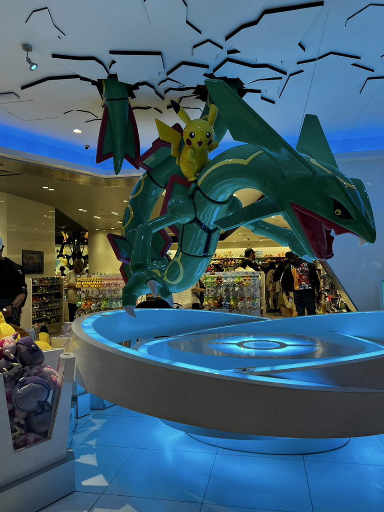
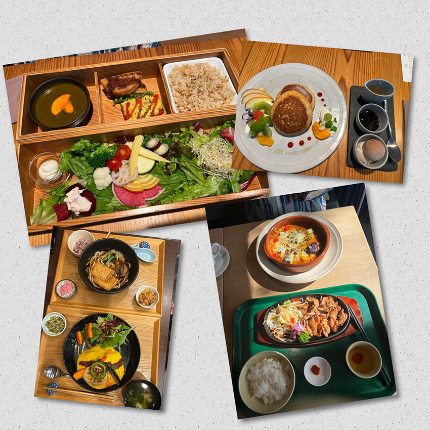
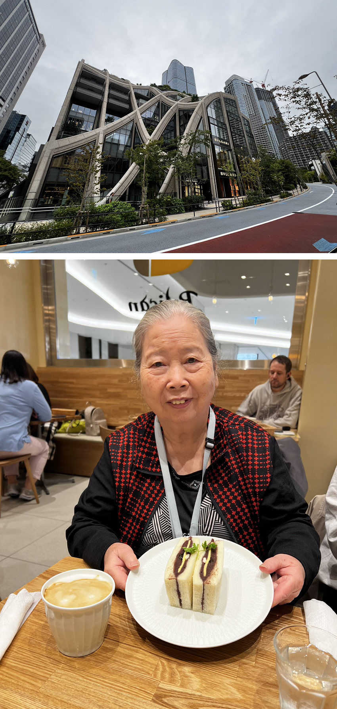
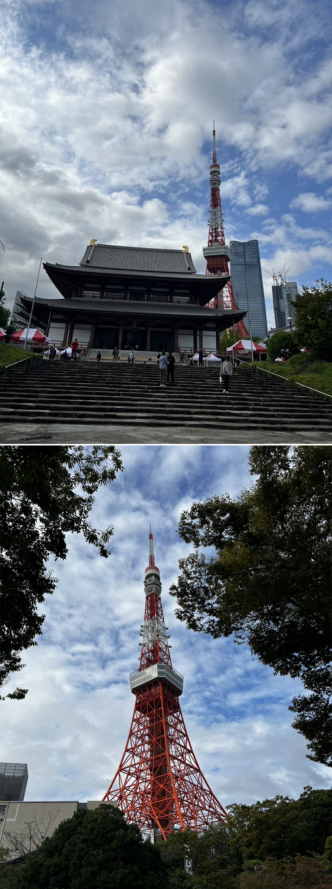
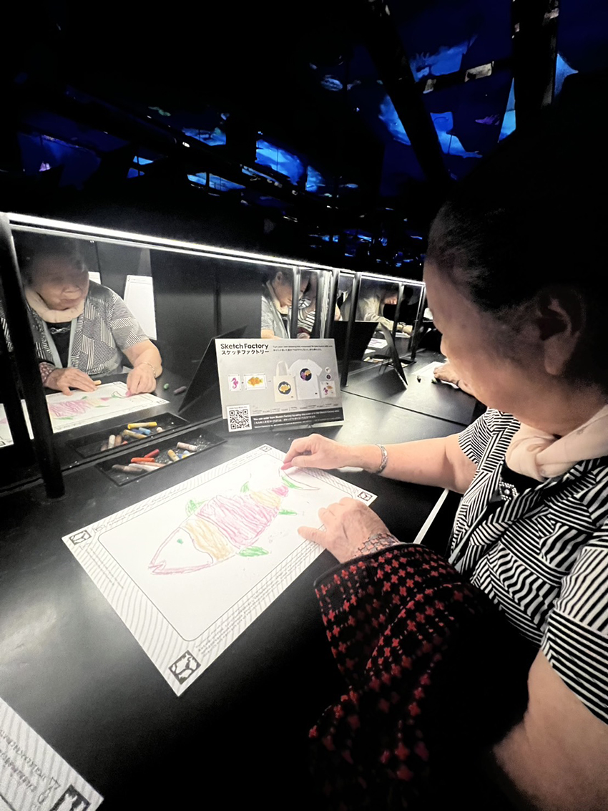
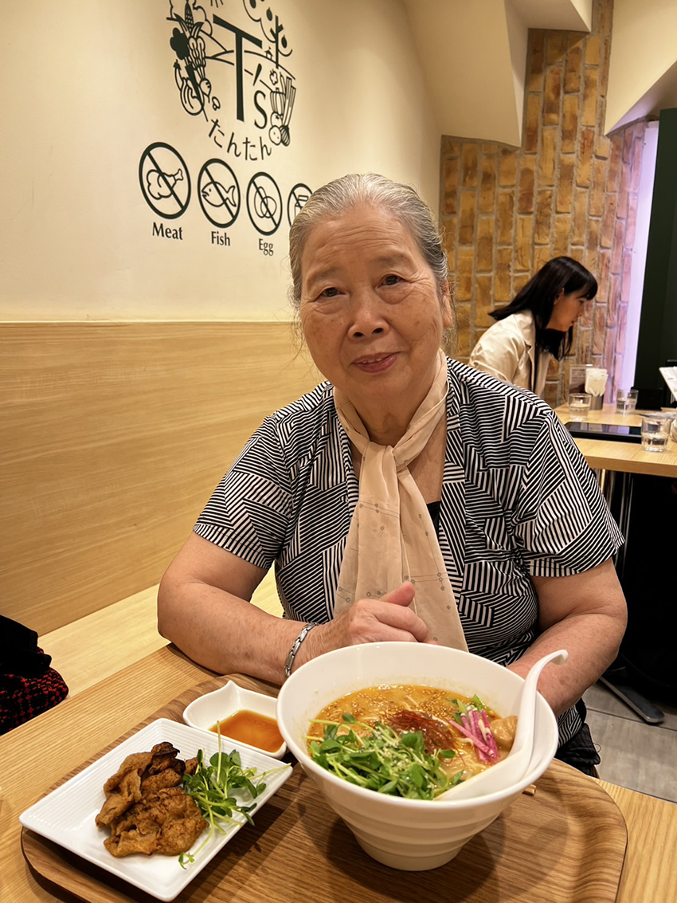
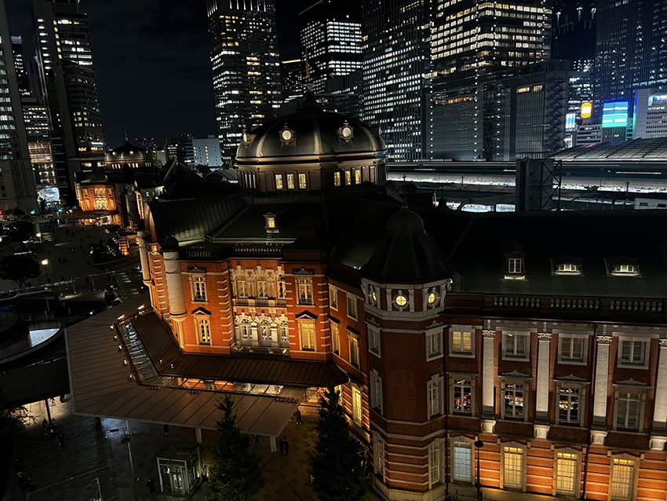

2024/9月底公司公告宣布一個10/11幸福補休日，讓我萌生起帶著Haru去旅行的念頭，Haru是我的媽媽，因為出生在光復以前，因此有日本名字，今年85歲，因為信仰一貫道茹素60年，蛋奶素在國外真的有點難尋找，所以通常Haru的旅行都是跟團，有了旅行的念頭，我開始看了一些影片及文章的分享，發現或許也是有機會可以試試看，於是開始本次的旅行計畫，時間非常的趕，又適逢雙十連假，但我還是先衝動的訂機票及住宿，其他就靠緣分了。
出發前的準備，我也是擔心真的找不到全素食的餐廳，又怕Haru吃得委屈，因此我先去買了素食滷肉罐頭，麵筋罐頭，素肉鬆，海苔，湯包，泡麵外加早餐麥片，最差的狀況就吃以上準備的食物，白飯可以在便利商店購買現成的微波，食、住、行準備好以後就準備出發了。
Day1啟程
前往機場的路上，我跟風寫了一段宣言，請Haru念一下，我Haru的東京旅遊宣言：
1. 喜歡就買，不能說太貴就不買。
2. 走累了就休息喝咖啡。
3. 不能說台灣比較好。
4. 不能說人太多，要走了啦！
5. 不能說不要排隊。
考量Haru的年紀，我預定了下午兩點的飛機，飛機上的第一餐，就可以選擇素食餐，抵達飯店已經是晚上9點，因此泡麵解決了晚餐合併消夜。
Day2
早餐：桂格麥片+便利商店小餐包
午餐：Ain Soph（銀座）
晚餐：Komaki Shokudo Kamakura Fushikian（秋葉原）
|  |
早上因為下雨，因此就啟程去淺草站更換72hr的東京地鐵票，跟著雨一起走走、吃了街邊美食草莓大福及蜜地瓜，因為無法日文溝通，我準備了日文/中文字卡，隨身攜帶，用A4印出來節省查找的時間，內容如下：
我吃蛋奶素 私はラクト・オボ・ベジタリアンを食べます
私はラクト・オボ・ベジタリアンを食べます
我不吃肉類跟海鮮 肉や魚介類は食べません
肉や魚介類は食べません
我不吃蔥，蒜，洋蔥，韭菜 タマネギ、ニンニク、タマネギ、ネギを食べません
タマネギ、ニンニク、タマネギ、ネギを食べません
這個字卡真的方便很多，不用解釋太久店員就秒懂，可以立刻回答你，是否可以食用，這樣的好處可以避免溝通誤會，也可以避免Haru誤食她不能吃的五辛。
午餐選擇了東京有四家分店的Ain Soph，店內餐點也跟店內氛圍同樣有日式的沉靜感，我們選擇了“福祿壽BENTO”口味很符合Haru的口感，只是對她來說有點過辣。午餐以後，走了一趟銀座，看看銀座的街景，也去Uniqlo 12層樓開開眼界、觀光客好多，Haru第一次在日本買衣服，雖然買的是台灣有的日本品牌，不過就是價格上會優惠一點，非常符合客家精神的Haru。
由於素食的因素，我們的行程其實都要圍繞著餐廳，因此移動晚餐到秋葉原，晚餐選擇了烏龍麵，清新的口感很符合Haru的胃口，我們就在秋葉原結束這一天的行程。我訪問了Haru第一次自由行是否有小鐵腿？因為我們自由行第一天通常都是25,000+步，今天雖然感覺很收斂，不知為何還是12,000步了！希望明天Haru還有體力走走。
|  |
| Haru違反旅遊宣言已經是稀鬆平常、隨時出現，我本來也預期會是這樣的狀況，宣言只是跟風，不用太認真指正她，輕鬆看待。 |
Day3
早餐：稀飯+罐頭+素肉鬆
午餐：Pelican吐司（麻布台之丘）
晚餐：T’s Tantan拉麵（東京車站京葉線往舞濱方向，需進入車站裡面）
|  |
Haru說他是皇太后，本次出遊我都服務很到位（笑）~今天準備的稀飯早餐真是不錯，稀飯可以在7-11便利商店購買，我用電熱水壺隔水加熱就可以吃到稀飯了。
早餐後啟程前往很熱門的景點-麻布丘之台，整個景點有種說不出的高級氣質感，很多名牌店家林立，每一棟都有各自的特色，在這裡可以看到高處的東京鐵塔，也可以很悠閒地散步，我選了一個有咖啡+吐司的店，這樣Haru不會太餓，老人家沒吃飽，就會有低血糖，要時時刻刻關注她是否肚子餓，畢竟不像在家裡隨時都可以拿到東西吃，距離TeamLab的展覽還有一段時間，多安排一個景點“增上寺”，第一次在日本搭計程車，心想不要讓Haru這麼累的轉來轉去，雖然她本人一直說不累，我還是選擇計程車，轉去增上寺看看東京鐵塔，第一次跟東京鐵塔這麼近的距離，旁邊的芝公園拍著東京鐵塔也覺得好美，看的心情都好起來。
|  |
預約三點半的TeamLab之前在台灣也有展出，聽說展場小一點，剛好麻布台之丘有這一個展覽，我毫不猶豫的就在台灣先買票，因為時間太緊迫，可以選擇的時間也很少，建議要來的朋友要早一點預定，可以選擇想要的時段。
|  |
藝術這個事情真的是不分年紀、看數位的TeamLab，Haru表示很開心也很有趣，在TeamLab喝茶也是一個很棒的體驗，看著杯子裡的花慢慢散開，隨著我們水的重量一直反覆的呈現，真的是很有氣質的一杯茶，另外一個有趣的互動，是選擇有海洋動物圖案的圖紙，畫上自己愛的顏色，完成以後交給工作人員，他們會投影在牆面上，讓你畫海洋生物在牆面上游來游去，Haru應該很久沒有拿起畫筆畫圖，看著自己的魚游來游去，也是很有趣的體驗。
|  |
晚餐時刻回到東京車站，到Kitte看了一下夜景，東京車站的建築，Haru馬上聯想到新竹車站還有總統府，自由行也是不免俗的要走錯路，晚餐的拉麵店，真的是多走了幾千步才找到，今天又是辛苦Haru囉！Haru說拉麵好吃、但是真的太鹹了。今日17,000步了！明天不知道會不會鐵腿了？！
|  |
Day4
早餐：罐頭+白麵包
午餐：Vegan Bistro Jangara（C03明治神宮站前）
晚餐：泡麵
一早被嫌棄的白麵包，Haru很少說東西不好吃，本來以為是單純的麵包，要來包素肉、麵筋、沒想到裡面出現怪怪的奶油。今日安排皇居（I09大手町D2出口），之前上網查一下，我們要的日期都已經滿額，因此選擇當日9點抵達，出發到皇居的桔梗門現場排隊，當日有300個名額，抵達時人已經有不少了，參訪以後，Haru只覺得喘，這個行程不適合Haru，有緩上坡、人多、各國語言的分組、排隊含說明，直到10點才開始導覽，一路上看到都是外觀，沒有任何室內的景點，一路上守衛追趕，不能脫離隊伍，我覺得是本次最沒有安排好的行程之一，不過皇居的周邊感覺很廣闊，很多日式庭園修整得很好，難得可以由內往外觀看，Haru應該也覺得很無聊，但是Haru不會抱怨。
中午來到一個很不錯的餐廳，排隊第二組、追加一碗飯、那個咖喱Haru覺得太辣了，需要白飯來中和一下，還追加了日本的素食泡麵，唯一選擇只有醬油口味，其他都不能食用，本次素食餐廳都有一個共通點，就是鹹，還有來吃的大部分都是外國人，東方人極少，可能真的太不方便，所以大家都放棄自由行。
飯後行程，來明治神宮走走，來到這裡，就覺得置身不一樣的世界，剛剛還在外面看藥妝，過一個橋，馬上進到另一個領地，一路上Haru細數著當年來日本的種種，25年前跟著外公一起到處搭新幹線，從南玩到北、還不准大家睡覺，說是出來玩不能浪費啊！從這樣的對話來看，他們當年應該是買了從北到南的新幹線周遊券吧！
今天終於聽到Haru說累，早上走皇居加上明治神宮都沒有休息♨️，回去飯店休息，晚上去超市採購、也去了大家熟悉的唐吉柯德、藥妝店，自由行該有的行程都走一回了，我查到的素食餐廳也用盡了，今天先好好休息。BTW，Haru今日突破2萬步了！！（拍拍手）
Day5回程
早餐：稀飯+罐頭+水煮蛋
午餐：泡麵
回程以前，帶Haru去找日本必吃的Harbs，Haru讚不絕口，好吃的千層蛋糕、果然排隊有價值。雖然是晚上七點半的飛機，帶著Haru也無法走快，機場售票的人員告知要提早三個小時到機場，連位置都幫忙畫好，因此我們13:30開始往回程的方向，雖然依依不捨，還是要畫下本次的旅遊終點，期待下一次再訪東京。
話說，今天沒有什麼行程，卻也走了1萬6千步，再次訪問Haru，她說真的不累，Haru覺得開心，我自從婚後就沒有這麼近的距離，跟這麼長的時間一起相處，24hr兩個母女一起出遊，真的是難得可以認識彼此更深的機會，經過本次的旅遊，再次感受我母親真的太強大了🏆祝福Haru平平安安。